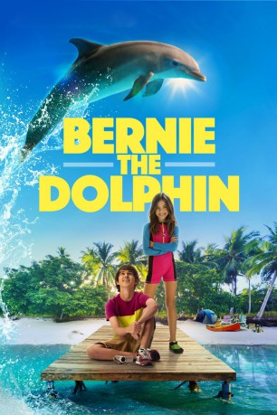

#10940 Bernie der Delfin
 
 IMDB-Wertung: 5.7 / 10
IMDB-Wertung: 5.7 / 10  Metascore: 0
Metascore: 0 
Die neunjährige Holly (Lola Sultan) und ihr elfjähriger Bruder Kevin (Logan Allen) sind zwei aufgeweckte Kids. Nach der Schule verbringen sie jede freie Minuten im Wasser bei ihren besten Freunden, den Delfinen. Vor allem der extrem schlaue Bernie ist den Geschwistern ans Herz gewachsen. Doch plötzlich droht Gefahr: Der skrupellose Geschäftsmann Winston Mills (Kevin Sorbo) will eine stinkende Mülldeponie an den idyllischen Strand setzen. Um das durchzukriegen, gibt er jedoch vor, einen schönen Wasserpark für Familien bauen zu wollen. Holly und Kevin ahnen allerdings, was wirklich vor sich geht. Weil ihnen die Erwachsenen inklusive ihrer Eltern aber keinen Glauben schenken, müssen die Kinder auf eigene Faust etwas unternehmen. Unterstützung erhalten sie von der netten Tierpflegerin Sidney (Lily Cardone) und natürlich von ihrem tierischen Kumpel Bernie...
Jahr: 2018
Dauer: 87 Minuten
FSK:
Land: Kanada Studio: Grindstone Entertainment GroupTonspuren: DD5.1 - ,
Untertitel: Deutsch, Englisch,
Auflösung: 1080p (1920x818) Größe: 3338 MB
Genre: Action, Komödie, Familie
Regisseur: Kirk Harris
Drehbuch: Terri Emerson, Marty Poole
Soundtrack: Joshua Mosley
Darsteller:
- Lola Sultan als Holly Ryan
- Logan Allen als Kevin Ryan
 Kevin Sorbo als Winston Mills
Kevin Sorbo als Winston Mills Stelio Savante als The Mayor
Stelio Savante als The Mayor- Jimel Atkins als Charlie
- Sean Michael Gloria als Jimmy
- Patrick Muldoon als Bob Ryan
- Dahlia Legault als Abby Ryan
- Sam Sorbo als Sandy Pierce
- Lily Cardone als Sidney Simms
- Owen Harn als Luke Lawson
 Vincent De Paul als Detective Wyatt
Vincent De Paul als Detective Wyatt- Darla Delgado als Summer Sands
- TeriEnna Blanco als Bernie Supporter on Beach
- Stephanie Ceballos als Bernie Supporter on Beach
- Andi Matheny als Elizabeth Mills
- David Velez als Bernie Supporter on Beach
- Braeden Sorbo als Digger
- Stacey Spong als Dolphin Trainer
Datei: X:\2018(A-F)\Bernie der Delfin (2018, FSK, 1920x818).mkv seit 08.04.2019
Festplatte: HD 2017(A-Z)-2018(A-F)
 Es gibt insgesamt 151 Filme in der Gruppe '2018(A-F)'
Es gibt insgesamt 151 Filme in der Gruppe '2018(A-F)'